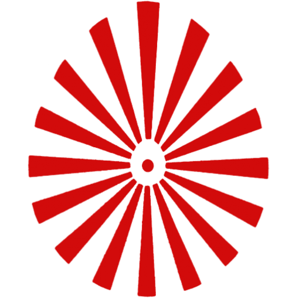

<p >
  <mat-toolbar class="headermat" color="primary">
    <button mat-icon-button class="example-icon">
      <!--<mat-icon>menu</mat-icon>-->
      
    </button>
    <span>RJ Ramesh</span>
    <span class="example-spacer"></span>
    <button mat-raised-button (click)="openDialog()">
      <mat-icon>account_circle</mat-icon> About Me
    </button>
  </mat-toolbar>
</p>


<router-outlet></router-outlet>
<app-yt-card></app-yt-card>
